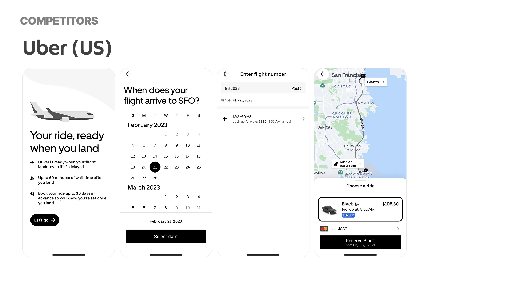
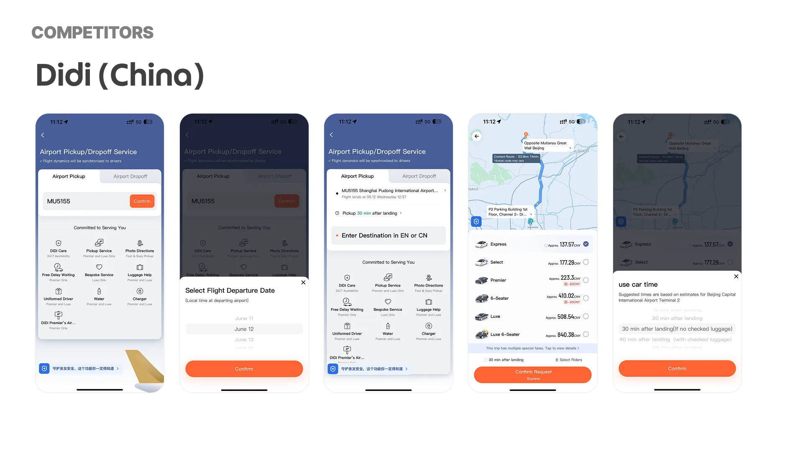
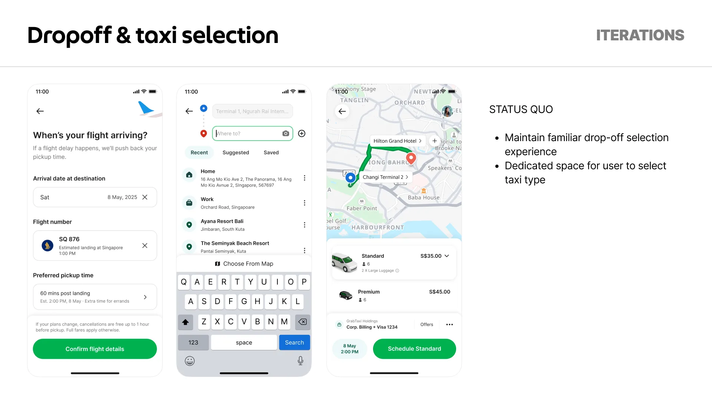
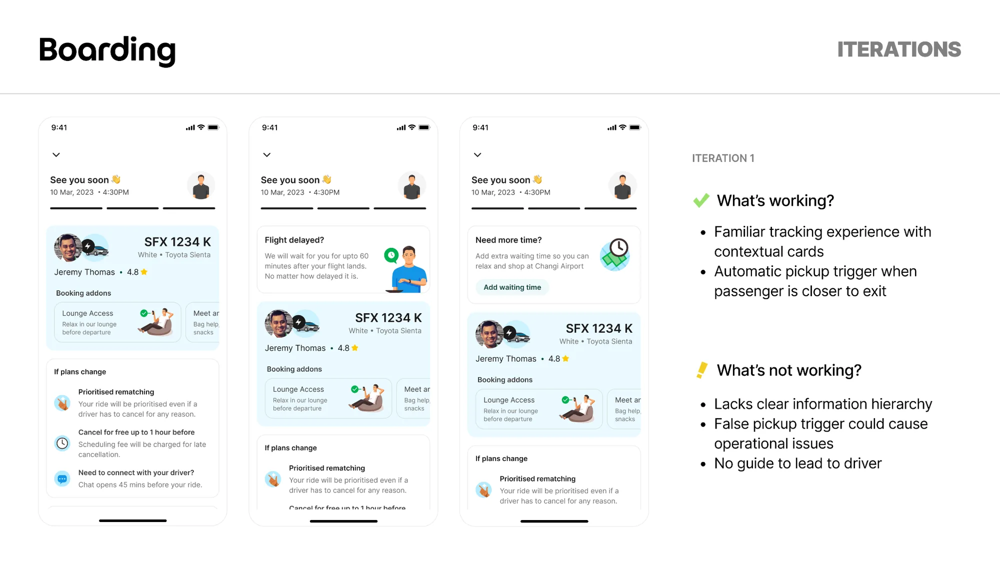
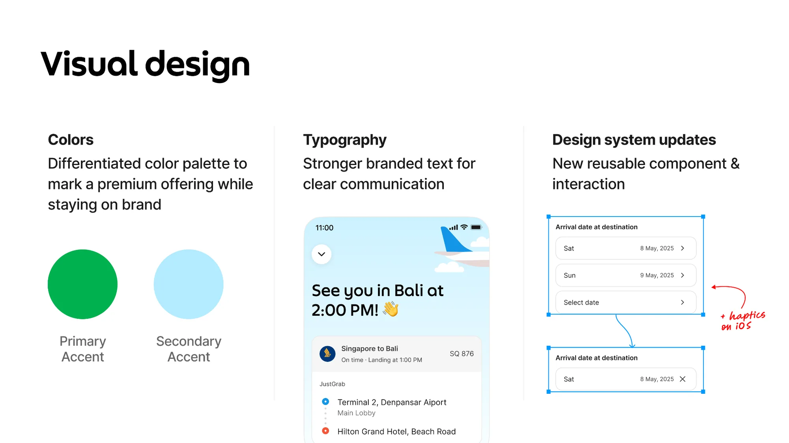

A small share of trips, carrying a large share of trust
Airport rides are some of the highest-value trips in ride-hailing. Across Southeast Asia, pickups split two ways: 80% are booked on demand when people land, and 20% are reserved in advance.
That 20% is the premium end of the market: travellers buying reliability and peace of mind, with better margins and room to grow. Grab fulfilled just 2% of it.1Why reservedOn-demand airport pickup is saturated and depends on whoever is nearby. Reserved rides are a premium, higher-margin promise, and people book them precisely because they can't afford for it to go wrong.
Southeast Asian airport pickups by booking type, from the opportunity sizing.
We saw three gaps in the reserved experience: fulfilment, conversion, and awareness and discovery. We picked fulfilment first.2SequencingMore demand doesn't help if the rides we've already sold don't happen. Fulfilment had to be fixed before conversion or awareness would be worth working on.
The ride was booked. The passenger just wasn't there.
I started with the numbers. Of all reserved airport ride requests, 15% never became a completed trip. More than half of those, 8% of all requests, were cancelled because the passenger didn't show.
"No-show" sounds like carelessness. To find out what it actually meant, we cold-called riders who had cancelled or missed a scheduled pickup.
I reached late at the pickup point because my flight was delayed.
Rider · flight delay
I didn't expect the wait time at immigration to be so long.
Rider · customs wait
My flight got postponed but I couldn't modify my ride in time.
Rider · reservation lock
Nobody forgot their ride. The booking was tied to a time, the traveller was tied to a flight, and the gap between those two clocks was what failed. That changed the brief:
How might wereduce cancellations on reserved rides to improve fulfilment, and with it, retention?
What the design had to fit inside
An MVP, not a platform
Early concepts drew a blunt response from engineering: "This could bloat up engineering timelines." Scope had to fit a first release.
Flight data comes from outside
Arrival times depend on an external flight API. What we could promise in the UI was limited by what that data could reliably tell us.
Airports are messy in ways files aren't
Immigration queues, baggage belts and terminal layouts vary by airport. Drivers waiting at the kerb cost money and goodwill.
Millions already know how to book
Drop-off and vehicle selection are muscle memory for Grab users. A new service couldn't make them relearn those steps.
Uber and Didi both start with the flight
We walked through how Uber in the US and Didi in China handle reserved airport pickup, from capturing the flight to guiding people after landing. Both ask for the flight early, treat the landing time rather than the booking time as the anchor, and build a waiting window around it.


Our first concept tried to plan the whole trip. Users wanted to find their driver.
The first concept went big: flight-synced itinerary planning and booking, launched from the Transport home. Universal flight search would accept a flight number, airport or airline, and a smart recommendation would work out pickup time from arrival, baggage, immigration and the walk to the exit.


We put it in front of travellers and engineers. The feedback didn't polish the concept; it redirected it.
My biggest concern is usually finding a driver once I land at the new airport. Airports are usually a maze to navigate through.
Traveller
What happens if my flight is delayed? Is there a waiting fee? How long do I have to get out?
Traveller
What am I supposed to enter here?
Traveller, at the flight field
This seems like a lot of work haha!
Traveller, on the itinerary planner
We narrowed the MVP to three things:3What changedThe itinerary planner was the part I was most attached to. It was also the part nobody asked for. We cut it from the MVP.
- Simplify flight input. Forgiving search, not exact-format entry.
- Focus on pickups. That's where the pain and the operational upside were clearest.
- Rework what happens after booking. Delay reassurance, waiting rules and pickup directions in one place.
What we chose, and what we turned down
Each of these went through at least two iterations. The rejected options aren't strawmen; each one solved part of the problem.
How should a traveller tell us their flight?
Ask for the flight number
A focused entry point made the task clear.
People still had to work out how a flight translated into a pickup time, and the time selector after the flight felt disconnected from it.
Lead with the benefit
A callout explained why flight details matter, which nudged adoption. Date and time were split, with a sensible default day.
The bottom-sheet selectors broke the flow and made it feel fragmented.
Easy input first, then a guided pickup time
Start with the lightest possible input, guide the flight lookup, and recommend pickup times instead of asking people to guess.
It got people moving fastest, and it was the easiest version to build on the external flight API.
Recommending a pickup time means owning the recommendation. We accepted relying on the flight data's accuracy in exchange for taking the guesswork away from the traveller.
Should a premium service get its own booking flow?
A bespoke airport booking flow
A purpose-built flow would let the whole journey feel premium and airport-specific.
It would make people relearn drop-off and car selection, steps they already do without thinking, at the moment they're most anxious.
Change only what's new
After flight selection, the flow returns to familiar Grab patterns: address autocomplete for drop-off and a dedicated space for choosing the taxi type.
Trust comes from familiarity. The new part, the flight, gets the attention.

Those steps look like a normal Grab booking, so visual design has to make the service feel premium on its own.
Who decides when the traveller is ready?
An automatic proximity trigger
A familiar tracking screen with contextual cards. The pickup would trigger automatically as the passenger got close to the exit.
Someone stuck at immigration looks "close" to the system. False triggers would send drivers to the kerb too early and cause problems on the ground. The screen also lacked hierarchy, with no guide to the driver.

Flight sync plus a pickup guide
Ride status is the title. Contextual cards change with each stage. When a flight is late, pickup time moves back automatically and the traveller is told. The traveller taps I'm ready to go and is guided to a specific door.
The traveller knows when they're through immigration. The system doesn't. Let the person who knows decide.
One extra tap for the traveller, in exchange for a signal operations can trust. An automated system that's sometimes wrong is worse than a manual one that's always right.
Premium, and still recognisably Grab
Because the booking steps stay familiar, the visual layer does the work of saying "this is a planned trip, not a quick ride".
A differentiated palette, with a sky-blue secondary next to Grab green, marks the premium service without leaving the brand.
Stronger branded type for status and reassurance: "See you in Bali at 2:00 PM."
A new arrival-date component was contributed back to the design system for reuse.



More rides booked, fewer travellers missing them
After launch, measured against reserved airport rides before the change:
- Booked rides
- +39% More travellers chose to book their airport ride in advance.
- Passenger no-shows
- −4.5pp Flight sync pushed pickups back when flights were late, instead of letting rides lapse.
- Driver cancellations
- +1.2pp Longer, less predictable waits landed on drivers. We're watching it alongside driver-waiting policies.
What I'd keep, and what I'd change
Validate UX against operations.
Automated proximity triggers look perfect in a design file. Real immigration queues need manual buffers and flight-delay overrides. The most useful review of this project wasn't a design crit; it was asking someone who runs airport ops what would break.
Flexibility isn't always kind.
A highly adaptive UI that keeps rearranging itself makes a just-landed traveller more anxious, not less. Plain step-by-step landmarks and a clear "we'll wait" were more reassuring than anything clever.
Design the driver's wait as carefully as the passenger's. The +1.2pp in driver cancellations tells me we moved some of the uncertainty from one side of the kerb to the other. Next time, driver-side waiting rules belong in the first iteration, not the follow-up.